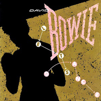
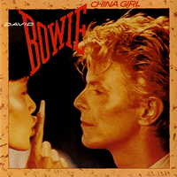
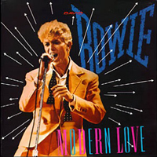
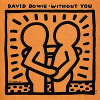

1983 - LET'S DANCE
After a three-year gap that had, until that point, been his longest break between albums, the Let's Dance album cover saw Bowie quite literally come out fighting. Having pushed himself - and the concept of rock music - to breaking point throughout the '70s, here was a healthier-looking Bowie who had reportedly signed to EMI for a record-breaking $17.5 million, proving he was capable of holding his own among the slick '80s pop stars that had snuck in on the back of his earlier innovations. A boxing fan himself, Bowie actually took lessons in the sport in order to ensure he was match-fit for tours.
Photographer: Greg Gorman | Designer: Mick Haggerty
MODERN LOVE I know when to go out And when to stay in Get things done I catch a paper boy But things don't really change I'm standing in the wind But I never wave bye-bye But I try I try There's no sign of life It's just the power to charm I'm lying in the rain But I never wave bye-bye But I try I try Never gonna fall for Modern love walks beside me Modern love walks on by Modern love gets me to the church on time Church on time terrifies me Church on time makes me party Church on time puts my trust in God and man God and man no confessions God and man no religion God and man don't believe in modern love It's not really work It's just the power to charm I'm still standing in the wind But I never wave bye-bye But I try I try Never gonna fall for Modern love walks beside me Modern love walks on by Modern love gets me to the church on time Church on time terrifies me Church on time makes me party Church on time puts my trust in God and man God and man no confessions God and man no religion God and man don't believe in modern love Modern love walks beside me Modern love walks on by Modern love gets me to the church on time Church on time terrifies me Church on time makes me party Church on time puts my trust in God and man God and man no confessions God and man no religion God and man don't believe in modern love Modern love Modern love Modern love walks beside me Modern love walks on by Modern love walks beside me Modern love walks on by Never gonna fall for Modern love Modern love CHINA GIRL Little China girl Little China girl I could escape this feeling with my China girl I feel a wreck without my little China girl I hear her heart beating loud as thunder Saw the stars crashing I'm a mess without my little China girl Wake up in the morning, where's my little China girl I hear her heart's beating loud as thunder I saw the stars crashing down I feel tragic like I'm Marlon Brando When I look at my China girl I could pretend nothing really meant too much When I look at my China girl I stumble into town Just like a sacred cow Visions of swastikas in my head Plans for everyone It's in the white of my eyes My little China girl You shouldn't mess with me I'll ruin everything you are You know it I'll give you television I'll give you eyes of blue I'll give you a man who wants to rule the world And when I get excited My little China girl says, "Oh baby just you shut your mouth." She says, "Sh." She says, "Sh." She says She says And when I get excited My little China girl says, "Oh baby just you shut your mouth." And when I get excited My little China girl says, "Oh baby just you shut your mouth." She says, "Sh." She says Little China girl Little China girl Little China girl Little China girl Little China girl LET'S DANCE Ah, ah, ah, ah (Let's dance) (Let's dance) (Let's dance) put on your red shoes and dance the blues (Let's dance) to the song they're playing on the radio (Let's sway) while colour lights up your face (Let's sway) sway through the crowd to an empty space If you say run, I'll run with you And if you say hide, we'll hide Because my love for you would break my heart in two If you should fall, into my arms and tremble like a flower (Let's dance) (Let's dance) (Let's dance) for fear your grace should fall (Let's dance) for fear tonight is all (Let's sway) you could look into my eyes (Let's sway) under the moonlight, this serious moonlight And if you say run, I'll run with you And if you say hide, we'll hide Because my love for you would break my heart in two If you should fall, into my arms and tremble like a flower (Let's dance) (Let's dance) (Let's dance) put on your red shoes and dance the blues (Let's dance) to the song we're playing (Let's sway) (Let's sway) under the moonlight, this serious moonlight (Let's dance) (Let's) (Let's) (Let's) (Let's sway) (Let's) Let's dance, let's dance, let's dance, let's dance, let's dance (Let's dance) Let's sway Let's sway Let's dance, let's dance, let's dance, let's dance, let's dance (Let's dance) (Let's dance) (Let's dance) (Let's dance) WITHOUT YOU Just when I'm ready to throw in my hand Just when the best things in life are gone I look into your eyes There's no smoke without fire You're exactly who I want to be with Without you What would I do? And when I'm willing to call it a day Just when I won't take another chance I hold your hand There's no smoke without fire Woman, I love you Without you What would I do? RICOCHET Like weeds on a rock face waiting for the scythe Ricochet - ricochet The world is on a corner waiting for jobs Ricochet - ricochet Turn the holy pictures so they face the wall "And who can bear to be forgotten" "And who can bear to be forgotten" March of flowers, march of dimes These are the prisons, these are the crimes "Men wait for news while thousands are still asleep Dreaming of tramlines, factories, pieces of machinery Mine shafts things like that." March of flowers, march of dimes These are the prisons, these are the crimes Sound of thunder, sound of gold Sound of the devil breaking parole Ricochet - it's not the end of the world Sound of thunder, sound of gold Sound of the devil breaking parole Ricochet - ricochet These are the prisons these are the crimes Teaching life in a violent new way Ricochet - ricochet Turn the holy pictures so they face the wall "And who can bear to be forgotten" "And who can bear to be forgotten" March of flowers, march of dimes These are the prisons, these are the crimes "Early, before the sun They struggle off to the gates In their secret fearful places they see their lives Unraveling before them" March of flowers - march of dimes These are the prisons, these are the crimes Sound of thunder, sound of gold Sound of the devil breaking parole Ricochet - it's not the end of the world "That's when they get home, damp eyed and weary They smile and crush their children to their heaving chests Making unfulfillable promises For who can bear to be forgotten" CRIMINAL WORLD You never told me of your other faces You were the widow of a wild cat And now I know about your special kisses And I know you know where that is at I guess I recognise your destination I think I see beneath your make-up What you want is so separation This is no ordinary, this is no ordinary (Oh, oh, oh) What a criminal world The boys are like baby-faced girls What a criminal girl She'll show you where to shoot your gun What a typical mother's son The only thing that she enjoys Is a criminal world Where the girls are like baby-faced boys You've got a very heavy reputation But no-one knows about your low-life I know a way to find a situation And hold a candle to your high-life disguise You caught me kneeling at your sister's door That was no ordinary stick-up I'm well aware just what you're looking for I am no ordinary, I am no ordinary (Oh, oh, oh) What a criminal world The boys are like baby-faced girls What a criminal girl She'll show you where to shoot your gun What a typical mother's son The only thing that she enjoys Is a criminal world Where the girls are like baby-faced boys Baby-faced boys Baby-faced What a criminal world What a criminal Criminal What a criminal world What a criminal Criminal CAT PEOPLE (PUTTING OUT THE FIRE) See these eyes so green I can stare for a thousand years Colder than the moon It's been so long Feel my blood enraged It's just the fear of losing you Don't you know my name? And you've been so long And I've been putting out fire With gasoline See these eyes so red Red like jungle burning bright Those who feel me near Pull the blinds and change their minds It's been so long Still this pulsing night A plague I call a heartbeat Just be still with me You wouldn't believe what I've been through You've been so long And it's been so long And I've been putting out the fire with gasoline Putting out the fire With gasoline See these tears so blue An ageless heart that can never mend These tears can never dry A judgement made can never bend See these eyes so green I can stare for a thousand years Just be still with me You wouldn't believe what I've been through You've been so long Well, it's been so long And I've been putting out the fire with gasoline Putting out fire With gasoline (Been so long) (Been so long) and it's been so long (Been so long) I've been putting out fire (Been so long) it's been so long (Been so long) been putting out fire (Been so long) it's been so long (Been so long) putting out fire (Been so long) Been so long (so long, so long) Been so long (so long, so long) Been putting out fire (been so long, so long, so long) Been putting out fire (been so long, so long, so long) Been so long (Been so long, so long, so long) (Been so long, so long, so long) Been putting out fire Been putting out fire Been so long Been so long And I've been putting out fire I've been putting out fire SHAKE IT (Shake it, shake it, what's my line?) (Shake it, shake it, what's my line?) I feel like a sail-boat Adrift on the sea It's a brand new day So when you gonna phone me? (Shake it, shake it, what's my line?) I could take you to heaven I could spin you to hell But I'll take you to New York It's the place that I know well (Shake it, shake it, what's my line?) Sitting on a flagstone, talking to a faceless girl (Shake it, shake it, what's my line?) Been wondering what to say but my eyes do the talking so well Duck and I sway (what's my line?) I shoot at a full moon (what's my line?) So what's my line? Shake it, shake it, baby Shake it, shake it, ooh 'Cause love is the answer Love's talking to me I'd scream and I'd fight for you You're better than money (Shake it, shake it, what's my line?) We're the kind of people who can shake it if we're feeling blue (Shake it, shake it, what's my line?) When I'm feeling disconnected, well, I sure know what to do (Shake it, shake it, what's my line?) Shake it, shake it, baby Oh, shake it, shake it I duck and I sway (what's my line?) I shoot at a full moon (what's my line?) So what's my line? Shake it, shake it, baby Shake it, shake it (whoa!) (Shake it, shake it, what's my line?) Shake it, baby Shake it, shake it (Shake it, shake it, what's my line?) Shake it, baby Shake it, shake it (Shake it, shake it, what's my line?)
SINGLES



